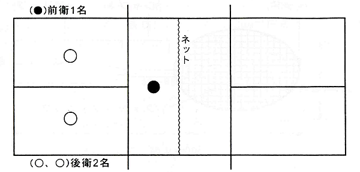
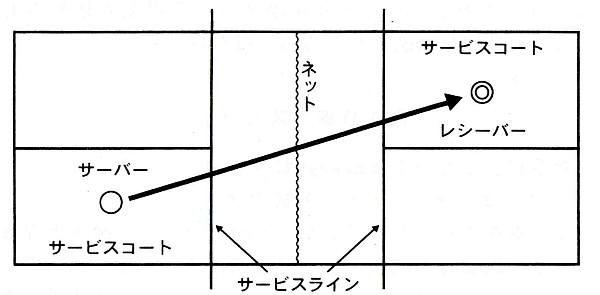
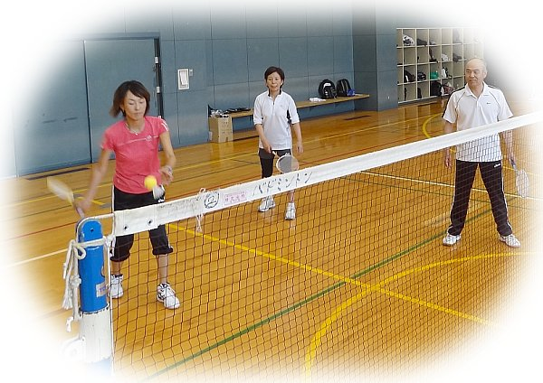
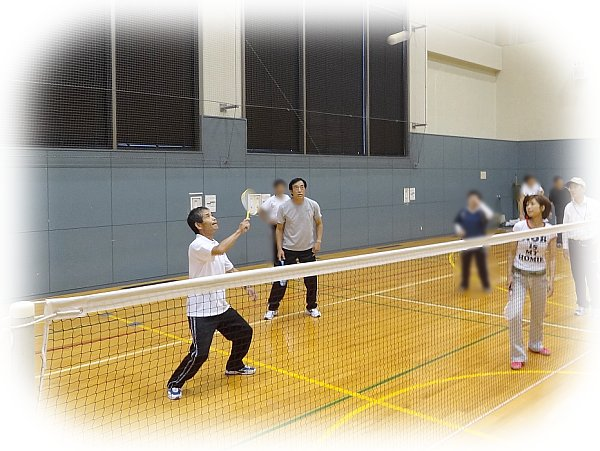
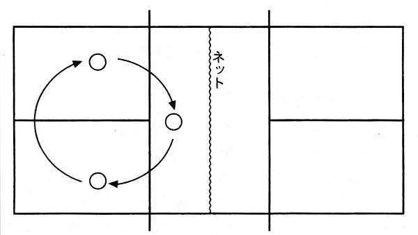
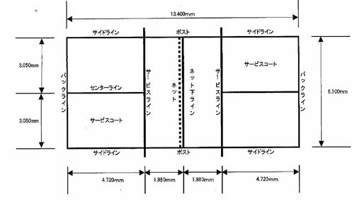
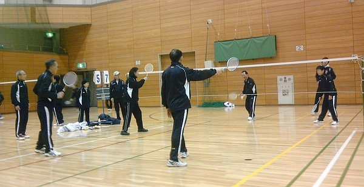

発祥は京都の長岡京市。
手軽にバドミントンを広く親しめる独自のニュースポーツとして考案されました。
『子どもから高齢者までが、いつでも、いつまでも、そして何より気軽に楽しめる』スポーツです。
3人で1チーム。バドミントンのコートを使用します。
ゲームは1セット15点。14点オールとなった場合は、2点先取したチームを勝者とします。
使用する道具
◆シャトル
バドミントンのシャトルの先端が、スポンジボールになっています。
このため、バドミントンのシャトルと比べると滞空時間が長いです。
◆ラケット
バドミントンのラケットに似ていますが、とても短いです。
全長50cmなので、バドミントン経験者の方は、最初は空振りするかもしれません。
ルール
ルールはこちらが分かりやすいです。いくつか図を転記しながら説明をします。
（図のオリジナルは全て前記リンク先にあります）
■まずはプレーヤーの位置
前衛1名，後衛2名です。
■ゲームは後衛のサービスから始まります（下図）
・サーブはアンダーサーブ。打点は腰から下です。
・サービスコートの概念はテニスと同様。ただし、常に右から。
・サーバーの軸足（前足）の裏全体またはその一部がコート面に触れた状態で。
・サーブの際、サービスラインは踏まないこと。
・前衛は、最初はコートの前に位置すること。
・レシーバーだけが、サービスを打ち返すことができる。
■ゲームが始まってからの、プレーヤーの位置について
・主審のホイッスルにより、競技が開始された後の前衛のプレーヤーは、自軍サイドであれば全ての場所からプレーすることができる。
・主審のホイッスルにより、競技が開始された後（インプレー中）の後衛のプレーヤーは、自軍サイドのサービスラインを踏み込むことも踏み越えることもできない。（要するに“後衛は前に出ちゃダメ”と言うことです。）ただし、後衛のプレーヤーが左右に入れ替わることはかまわない。
ここからが、もっとも特徴的なルールです。
・シャトルは、2打以内で相手サイドへ返す。また、シャトルに触れるのは、一人1回とする。
・ラリーのとき、シャトルを打った瞬間、打点より下にシャトルが下がってはいけない。 →極端に言いますと・・・スマッシュ禁止！・・・と言うことです。
■ローテーション
サービスサイドからサーブ権が移ってきた時、時計回りに１つローテーションし、サービスを開始します。
■コートのサイズ
バドミントンのコートを使います。
スポーツ推進委員もルールを勉強中！
